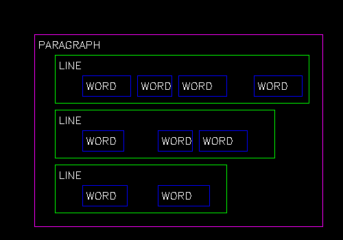

Overview
The TextOCR class leverages Optical Character Recognition (OCR) to detect, recognize, and group text from images. It it processes images through three stages: Detection, Recognition, and Grouping. The flexibility of its parameters allows developers to fine-tune performance for diverse use cases, including document scanning, real-time recognition, and automated data entry.
This guide begins with initial instructions for basic setup of OCR. Subsequent sections offer a comprehensive list of OCR settings that can be fine-tuned for specific needs:
For non-standard use cases, particularly for Grouper Settings, developers are encouraged to experiment with and adjust these parameters to optimize performance.
Additionally, the process() method of the TextOCR class can be utilized to detect and recognize text within images. This interface enables developers to build CameraX analyzers that integrate with other detectors.
Capabilities
Supported Characters
TextOCR recognizes a range of characters, including:
*0123456789abcdefghijklmnopqrstuvwxyzABCDEFGHIJKLMNOPQRSTUVWXYZ!\"#$%&'()*+,-./:;<=>?@[\\]^_`{|}~*
By default, it supports a maximum word length of approximately 15 characters, though this limit may decrease with the use of uncommon fonts. Enabling tiling removes this restriction.
Input/Output
Input Parameters: The default model input size is 640x640 pixels, but this can be adjusted during runtime initialization.
Output Parameters: The output consists of a list of text detections, each accompanied by a list of complex bounding boxes that define the location and content of the detected text.
Configuration
Before starting with TextOCR, configure key settings such as model input size, resolution, and inference type. Changes to these settings will require reinitializing the models. Information on configuring these settings are provided in the sections that follow.
Model Input Size
The Model Input Size defines the resolution at which the AI processes images. Before analysis, images are resized to this dimension. Adjusting this size balances speed and accuracy.
Key Considerations:
- Start with the default resolution 640x640 for optimal processing.
- If the results are not sufficiently accurate for small text, increasing the resolution can improve precision.
| Input Size | Best For | Use Case | Consideration |
|---|---|---|---|
| Smaller (e.g., 640x640) | Speed: Faster processing | Large or close text | Reduced accuracy for small text |
| Larger (e.g., 1600x1600) | Accuracy: Better for details | Fine print, distant, or dense text | Slower processing, higher memory usage |
| Custom (Multiples of 32, e.g., 800x800) | Balancing speed and accuracy | Low-contrast or medium-sized text | Requires experimentation to find the optimal setting |
Resolution
Camera resolution refers to the number of pixels the device’s camera sensor can capture (e.g., 1MP = 1280x720, 8MP = 3840x2160). It determines the quality of the source image before any resizing occurs for AI processing.
Higher camera resolution provides a more detailed and higher-quality original image, which can significantly enhance the AI model's ability to detect and recognize small, faint, or distant text. However, this increased detail comes at the cost of greater processing power and memory usage.
Key Considerations:
- Impact of Camera Resolution - Higher resolutions enhance input image detail, aiding in recognizing small, low-contrast, or distant text. However, images are downscaled to the model's input size for processing, so the benefits of high-resolution cameras diminish with low model input sizes.
- General Guidance - Aim for a minimum text height of 16 pixels in the input image, adjusting for font size and camera distance from the target.
| Resolution | Best For | Use Case | Consideration |
|---|---|---|---|
| 1MP (1280x720) | Speed, power efficiency | Large/simple text | May miss fine details |
| 2MP (1920x1080) | General use | Stylized or moderately detailed text | Balanced performance |
| 4MP (2688x1512) | Detailed scans | Contracts, forms, dense text | Higher memory and battery use |
| 8MP (3840x2160) | Maximum detail | Archival purposes | Large files, diminishing returns for low input sizes |
Relationship Between Model Input Size and Camera Resolution:
| Resolution | Low Input Size (e.g., 640x640) | High Input Size (e.g., 1600x1600) |
|---|---|---|
| Low Resolution (e.g., 1MP / 1280x720) |
Speed: Fastest Accuracy: Lowest Use Case: Large, clear text close to the camera Note: Small/fine details may be lost |
Not Recommended: Wasted computation with little accuracy gain |
| High Resolution (e.g., 8MP / 3840x2160) |
Speed: Fast Accuracy: Moderate Use Case: Large/medium text, quick scans Note: High-resolution source is downsampled for AI, so small text may still be missed |
Speed: Slowest Accuracy: Highest Use Case: Detailed, small, dense, or distant text Note: High memory and battery usage; may stress low-end devices |
Inference Type (Processor)
The Inference Type specifies which chip on the device is responsible for performing AI computations (referred to as "inference"). This choice directly impacts the speed and efficiency of image processing.
Key Considerations:
- DSP (Digital Signal Processor) - Use DSP if available, as it is specifically designed for real-time, energy-efficient AI tasks and provides optimal performance.
- GPU (Graphics Processing Unit) - If DSP is not available, the GPU serves as an alternative for handling AI workloads efficiently.
| Processor | Description | Performance | Use Case | Device Platform |
|---|---|---|---|---|
| DSP (Digital Signal Processor) | Optimized for real-time, energy-efficient tasks. Ideal for specific AI workloads where battery life and efficiency are critical. |
|
Best choice for real-time, low-energy tasks such as edge AI inference. | Best for: SD6490, SD5430 FP2; for relevant device models, visit Zebra Platform Devices |
| GPU (Graphics Processing Unit) | Designed for heavy, parallel AI tasks and complex models. Suitable for computationally intensive workloads. |
|
Best for handling complex AI models or tasks requiring significant computational power. | Best for: SD4490, SD5430 FP1 Good for: SD6490, SD5430 FP2; for relevant device models, visit Zebra Platform Devices |
| CPU (Central Processing Unit) | Acts as the fallback processor for AI inference tasks. Always available but less efficient compared to DSP and GPU. |
|
Suitable for lightweight tasks or as a fallback when DSP or GPU are unavailable or causing issues. | Fallback for: SD6490, SD4490, SD5430 FP2, SD5430 FP1; for relevant device models, visit Zebra Platform Devices |
Stages of TextOCR
The Text OCR process consists of three stages:
- Text Detection - Identifies and filters text boxes within the image
- Text Recognition - Reads and extracts text content from each identified text box.
- Text Grouping - Organizes recognized words into lines or paragraphs.
Information about each stage is provided in the subsequent sections.
Stage 1: Text Detection
The text detection process occurs in two main stages:
- Heatmap Threshold (Pixel-Level Filtering) - A heatmap is generated where each pixel is assigned a score indicating the likelihood of it being part of a text character. The Heatmap Threshold filters out individual pixels based on these scores, retaining only the most probable candidates.
- Box Threshold (Box-Level Filtering) - After pixel filtering, the system identifies groups of pixels and draws bounding boxes around them. Each box is assigned a confidence score, and the Box Threshold filters out boxes with low confidence, retaining only those likely to contain text.
Filtering Parameters
Once potential text boxes are identified, additional filtering can be applied to refine results by eliminating noise or unwanted detections. These filters also allow adjustments to the image and bounding box handling:
- Min Box Size (Filtering Narrow Boxes) - Removes text boxes that are too narrow or short, such as underscores, divider lines, or other elongated shapes that are unlikely to contain text.
- Min Box Area (Filtering Small Boxes) - Excludes text boxes with a total area (width × height) that is too small. This is particularly effective for ignoring noise such as tiny specks or dots in the image.
- Unclip Ratio (Expanding Box Size) - Expands the bounding boxes after they are detected but before text recognition occurs. Initial bounding boxes are often tightly fitted to the text, and this parameter increases their size to include some background, improving text recognition accuracy.
- Min Ratio for Rotation (Handling Vertical Text) - Rotates vertically oriented boxes (e.g., bottom-up or top-down text) to a horizontal orientation for better recognition. Applies only to boxes with a height-to-width ratio exceeding the specified value, rotating them 90 degrees to facilitate decoding.
| Parameter | Description | Guidance |
|---|---|---|
| Heatmap Threshold | Minimum pixel confidence for potential text regions. (Pixel-level filtering) |
|
| Box Threshold | Filters detected boxes by their overall confidence. (Box-level filtering) |
|
| Min Box Size | Filters out text boxes that are too narrow or too short. (Filtering "skinny" boxes) |
|
| Min Box Area | Filters out text boxes if their total area (width × height) is too small. (Filtering "tiny" boxes) |
|
| Unclip Ratio | Expands or "stretches" detected boxes outward to include full characters and some background. (Expands box size) |
|
| Min Ratio for Rotation | Rotates vertically (high height, low width) oriented boxes so they become horizontal. (Rotates vertical boxes) | Only adjust if the images contain many rotated texts (e.g., upright or vertical text). |
Legend:
- ↑: Increase the value of the parameter.
- ↓: Decrease the value of the parameter.
Stage 2: Text Recognition
After text boxes are detected, the next step is to extract and accurately read the text within each bounding box. AI Suite uses the "Total" decoder to convert character predictions into meaningful words, even in cases where the model is uncertain about specific characters.
The "Total" decoder evaluates all possible character options for each position and balances confidence and flexibility using two key parameters: TopK Ignore Cutoff, Total Prob Threshold, and Max Word Combinations. These parameters act as filters to refine predictions and determine the final output.
Decoder Parameters
| Parameter | Description | Guidance | Example |
|---|---|---|---|
| TopK Ignore Cutoff The Gatekeeper |
The maximum number of highest-confidence character predictions the "Total" decoder considers for each character position. If additional are needed to meet the Total Prob Threshold, the model outputs a replacement character (e.g., "�"). |
|
Example: If predictions are: 'S' (40%), 's' (30%), '5' (15%), 'B' (5%), '8' (2%) And the cutoff is set to 4, only the top four predictions ('S', 's', '5', 'B') are retained. '8' and lower-ranked options are discarded. |
| Total Prob Threshold The Quality Check |
The minimum cumulative confidence score required for a word prediction to be accepted. If the total score is below the threshold, the model outputs a replacement character (e.g., "�"). |
|
Example: Using the predictions above, their combined confidence is: 0.40 (S) + 0.30 (s) + 0.15 (5) + 0.05 (B) = 0.90. If the threshold is 0.85, the decoder proceeds. If the combined score is less, it outputs a replacement character (e.g., "�"). |
| Max Word Combinations Result Limiter |
Restricts the number of valid word outputs generated from possible character combinations for each detection. This helps avoid overwhelming results, particularly for ambiguous inputs, by limiting the model’s consideration of all potential character combinations across all positions in the word. |
|
Example: Suppose there are 20 possible valid word combinations after applying the above filters. If Max Word Combinations is set to 5, only the top 5 most confident word outputs are returned. The other 15 combinations are ignored, even if valid. |
Legend:
- ↑: Increase the value of the parameter.
- ↓: Decrease the value of the parameter.
Recognition: Special Cases
These features are designed for specific scenarios and are generally not required for most OCR tasks. Use them only when needed to address unique text recognition challenges.
Flip
Runs recognition in multiple orientations to improve accuracy for rotated or flipped text. While this increases accuracy for text in varying orientations, it also adds processing time.
| What It Does | When/How to Adjust It |
|---|---|
| Runs recognition in multiple orientations to handle rotated or flipped text. |
|
Tiling
Splits very long, thin lines of text (e.g., serial numbers, document titles, part numbers) into smaller, manageable "tiles" for better recognition. This is useful when a word box exceeds the recognition limit (15 characters). While tiling improves accuracy, it also adds processing time, so it should be used only when necessary.
| Parameter | What It Does | When/How to Adjust It |
|---|---|---|
| Aspect Ratio Lower Threshold | Sets the minimum width-to-height ratio for boxes to be tiled. Only boxes wider than this value are tiled, helping to control which boxes are considered "elongated." |
|
| Aspect Ratio Upper Threshold | Sets the maximum width-to-height ratio for boxes to be tiled. Only boxes up to this ratio get tiled. This prevents extremely long or oddly shaped boxes from being tiled. |
|
| TopK Merged Predictions | Limits the number of "best guess" decodes returned after tiling. |
|
Legend:
- ↑: Increase the value of the parameter.
- ↓: Decrease the value of the parameter.
Stage 3: Text Grouping
Text grouping is used to organize OCR results into logical chunks, such as lines and paragraphs, for better structure and readability. The grouping process relies on several parameters that define spacing, alignment, and font size differences.
| Parameter | What It Does | When/How to Adjust It |
|---|---|---|
| Width Distance Ratio | Defines how much space is allowed between words before they are considered part of separate lines. |
|
| Height Distance Ratio | Allows grouping of words into a single line even if their font sizes are significantly different. |
|
| Center Distance Ratio | Enables grouping of words into a single line even if they are not perfectly aligned (e.g., curved or wavy text). |
|
| Paragraph Height Distance | Specifies the maximum distance between lines that can still be grouped into the same paragraph. |
|
| Paragraph Height Ratio Threshold | Allows lines with very different heights (font sizes) to be grouped into the same paragraph. |
|
Legend:
- ↑: Increase the value of the parameter.
- ↓: Decrease the value of the parameter.
Developer Guide
This guide outlines the process for using TextOCR to detect and recognize text within images, from initialization to outputting the identified text.
Step 1: Initialization
Follow these steps to set up and initialize a TextOCR object:
Import the TextOCR class using
com.zebra.ai.vision.detector.TextOCR.Configure OCR Settings: Create a
TextOCR.Settingsobject.Optional: Set model input dimensions: If needed, customize the model input dimensions (height and width). These should be multiples of 32 (e.g., 640).
settings.detectionInferencerOptions.defaultDims.width = [your value]; settings.detectionInferencerOptions.defaultDims.height = [your value];- Smaller Input Sizes - Reduce processing time and increase speed, but may decrease accuracy. Ideal for larger or closer text.
- Larger Input Sizes - Improve accuracy for smaller or more distant text, but increase inference time. An input size that is too large may cause out-of-memory errors and potentially cause an application crash at run-time.
Optional: Configure the additional OCR settings to optimize detection and recognition:
Initialize the OCR object - Declare a
TextOCRobject. UseCompletableFutureto initialize it asynchronously with anExecutorfor concurrent processing.Callback Handling - Use
thenAccept()to assign the initializedTextOCRobject to thetextocrvariable, enabling it for text detection tasks like barcodes and products in images.
Sample Code
Initialization sample code:
import com.zebra.ai.vision.TextOCR;
TextOCR.Settings settings = new TextOCR.Settings();
// Optional: Override the default model input size
settings.detectionInferencerOptions.defaultDims.width = 1280;
settings.detectionInferencerOptions.defaultDims.height = 1280;
// Initialize OCR object
TextOCR textocr = null;
// Initialize textocr
// settings = TextOCR.Settings object created above
// Executor = An executor thread for processing API calls and returning results
CompletableFuture<TextOCR> futureObject = getTextOCR(settings, executor);
// Use the futureObject to implement the thenAccept() callback of CompletableFuture
futureObject.thenAccept (OCRInstance -> {
// Use the Textocr object returned here for detecting barcodes/Shelves/products
textocr = OCRInstance;
});
Step 2: Capture Image
Capture the image and ensure the image is in the form of a Bitmap.
Step 3: Detect Text
Use one of the following methods to detect text within an image, based on the type of text to detect:
Generic Text - Outputs text in complex bounding boxes. Sample code:
Bitmap image = ... // Your bitmap image here // Initialize executor Executor executor = Executors.newFixedThreadPool(1); // Input parameters include a bitmap image and an executor thread object for performing detections CompletableFuture<OCRResult[]> futureResult = textocr.detect(bitmap,executor); futureResult.thenAccept (ocrResults -> { // Process the returned output that contains complex bounding boxes and text within }); // Once finished with the textOCR object, dispose of it to release resources and memory used during detection. textOCR.dispose();Words – Outputs an array of words. A word is a discrete unit of text identified within an image, typically separated by spaces or punctuation. Sample code:
Bitmap image = ... // Your bitmap image here // Initialize executor Executor executor = Executors.newFixedThreadPool(1); // Input parameters include a bitmap image and an executor thread object for performing detections CompletableFuture<Word[]> futureWords = textocr.detectWords(bitmap,executor); futureWords.thenAccept (words -> { // Process the returned array of detected words }); // Once finished with the textOCR object, dispose of it to release resources and memory used during detection textOCR.dispose();Paragraphs - Outputs a hierarchical structure of paragraphs using the grouping mechanism described in Grouper Settings. A paragraph is formed by grouping words that appear on the same line, and these lines are then organized into paragraphs. The process is parameterized, with relevant parameters detailed in the Grouper Settings. Sample code:
Bitmap image = ... // Your bitmap image here // Initialize executor Executor executor = Executors.newFixedThreadPool(1); // Input parameters include a bitmap image and an executor thread object for performing detection CompletableFuture<TextParagraph[]> futureTextParagraph = textOCR.detectParagraphs(bitmap,executor); futureTextParagraph.thenAccept (paragraphs -> { // Process the returned array of detected paragraphs. }); // Once finished with the textOCR object, dispose of it to release resources and memory used during detection textOCR.dispose();
Methods
TextOCR (Settings settings)
TextOCR.TextOCR(Settings settings) throws IOException
Description: Initializes the OCR engine with the specified settings, allowing subsequent text detection and analysis on image inputs. It checks for the necessary model file and verifies the integrity of the archive. If issues are detected, appropriate exceptions are thrown.
Parameters:
- settings TextOCR.Settings - An instance of the
Settingsclass containing configuration options for the OCR engine.
Return Value: CompletableFuture<TextOCR>
Exceptions:
- IOException - Thrown if the archive is corrupted.
detect (Bitmap srcImg, Executor executor)
CompletableFuture<OCRResult[]> detect (Bitmap srcImg, Executor executor) throws InvalidInputException, IllegalStateException
Description: Performs Optical Character Recognition (OCR) on the provided Bitmap image, using the specified executor for asynchronous execution.
Parameters:
- srcImg (Bitmap srcImg) - The Bitmap image to perform OCR on.
- executor - Manages asynchronous task execution.
Return Value: A CompletableFuture that resolves to an array of OCRResult, each containing complex bounding boxes and recognized text.
Exceptions:
- InvalidInputException - Thrown if the Bitmap is null.
- IllegalStateException - Thrown if the OCR engine is in an invalid state for detection.
detectWords (Bitmap srcImg, Executor executor)
CompletableFuture<Word[]> TextOCR.detectWords (Bitmap srcImg, Executor executor) throws InvalidInputException, IllegalStateException
Description: Detects individual words in the provided Bitmap image using the specified executor for asynchronous execution.
Parameters:
- srcImg (Bitmap srcImg) - The image to analyze for word detection.
- Executor - Manages asynchronous task execution.
Return Value: A CompletableFuture that resolves to an array of Word objects, each containing complex bounding boxes and possible text decodes.
Exceptions:
- InvalidInputException - Thrown if the Bitmap is null.
- IllegalStateException - Thrown if the OCR engine is in an invalid state for performing word detection.
detectParagraphs (Bitmap srcImg, Executor executor)
CompletableFuture<TextParagraph[]> detectParagraphs(Bitmap srcImg, Executor executor) throws InvalidInputException, IllegalStateException
Description: Detects paragraphs in the provided Bitmap image using the specified executor for asynchronous execution.
Parameters:
- srcImg (Bitmap srcImg) - The image to analyze for paragraph detection.
- executor - Manages asynchronous task execution.
Return Value: A CompletableFuture that resolves to an array of TextParagraph objects, representing detected paragraphs.
Exceptions:
- InvalidInputException - Thrown if the Bitmap is null.
- IllegalStateException - Thrown if the OCR engine is in an invalid state for performing paragraph detection.
getTextOCR (Settings settings, Executor executor)
CompletableFuture<TextOCR> getTextOCR(Settings settings, Executor executor) throws InvalidInputException, RuntimeException
Description: Asynchronously initializes and retrieves a TextOCR instance using the specified settings and executor.
Parameters:
- Settings - An instance of
TextOCR.Settingscontaining configuration options for the OCR engine. - executor - Manages asynchronous task execution.
Return Value: A CompletableFuture that resolves to an initialized TextOCR instance.
Exceptions:
- InvalidInputException - Thrown if the settings are invalid or null.
- RuntimeException - Thrown if an unexpected error occurs during initialization.
Dispose()
void dispose()
Description: Releases all internal resources used by the TextOCR object. This function must be called manually to free up resources.
TextOCR.Settings
The Settings class is a nested class within the TextOCR class, designed to configure various parameters required for performing Optical Character Recognition (OCR). It allows for fine-tuning of the OCR process through settings related to detection, recognition, and decoding.
Constructors
Settings()
TextOCR.Settings settings = new TextOCR.Settings();
Description: Constructs a new Settings object with default values for all parameters.
Grouper Settings
The GrouperSettings class provides parameters for customizing the behavior of the OCR text grouping algorithm. It offers control over how text elements are spatially organized based on their geometric properties. By adjusting these settings, developers can fine-tune how text boxes are grouped into lines, paragraphs, or other structures based on their spatial relationships.
Grouping occurs in two stages. Words detected by OCR are grouped into Lines that are further grouped into Paragraphs. In the graphic representation below, Words, Lines and Paragraphs are represented by blue, green and fuchsia borders, respectively.

widthDistanceRatio
float TextOCR.Settings.GrouperSettings.widthDistanceRatio
Description: Determines the threshold for joining Words into Lines. Adjusting this parameter allows control over acceptable spacing between Words in a Line. Words spaced beyond this threshold are treated as separate Lines. The default value of 1.5f indicates that the acceptable space between Words should not exceed 50% of their average width. Increasing this value to 2.0f allows for a maximum acceptable space of 100% of the average Word width.
For example, if the average Word width is 90 pixels, widthDistanceRatio of 2.0 allows words with centers up to 180 pixels apart to be grouped into the same Line.
Tuning effect: Increasing this parameter causes horizontally spaced Words to join into a Line. Set this value higher if Words are spaced further apart and should be joined into a Line, such as in artistic layouts.
Default: 1.5f
Valid range: [0.0f, inf]

heightDistanceRatio
float TextOCR.Settings.GrouperSettings.heightDistanceRatio
Description: Affects the grouping of Words into Lines, particularly in scenarios where text undergoes a sudden change in font size but should still be grouped together. Although the algorithm has no knowledge of the actual font size, it uses the height of the complex bounding box to approximate it. The default value of 2.0f indicates that Words will be grouped together even if their font size differs by up to twice the height.
For example, setting this parameter to 4.0 allows words with height differences up to 4 times to be grouped into the same Line.
Tuning effect: Increasing this parameter allows words of varying heights to join into a single Line. Raise this value higher when there is significant variation in text sizes within the same line, such as in documents with mixed fonts.
Default: 2.0f
Valid range: [1.0f, inf]

centerDistanceRatio
float TextOCR.Settings.GrouperSettings.centerDistanceRatio
Description: Affects the joining of Words into Lines, particularly in scenarios where lines of text are not perfectly straight, such as in curved lines of text. The threshold value should be adjusted empirically, as it mathematically represents the relationship between the positions of two consecutive Words.
For example, if the average Word height is 20 pixels, setting centerDistanceRatio to 1.0 allows Words with centers up to 20 pixels apart vertically to be grouped into the same Line.
Tuning effect: Increasing this parameter allows Words that are not vertically aligned to be joined into the same Line.
Default: 0.6f
paragraphHeightDistance
float TextOCR.Settings.GrouperSettings.paragraphHeightDistance
Description: Determines the difference in vertical spacing between the center of two Lines to determine if they should be grouped into a Paragraph. It is particularly useful when the Lines of text have unusually large "leading", which refers to the distance between consecutive Lines in a Paragraph. The default value of 1.0f indicates that the Lines can be grouped into a paragraph if their centers are spaced apart by 100% of their average height.
For example, if the average Line height is 30 pixels, setting this parameter to 2 allows Lines with centers up to 60 pixels apart to be grouped into a Paragraph.
Tuning effect: Increasing this parameter allows Lines that are spaced farther apart vertically to be joined into a Paragraph. Consider raising this value higher for documents with widely spaced Lines.
Default: 1.0f
Valid range: [0.0f, inf]

paragraphHeightRatioThreshold
float TextOCR.Settings.GrouperSettings.paragraphHeightRatioThreshold
Description: Determines if there is a significant height difference between two rows, expressed as a ratio of the heights of two adjacent Lines, to decide whether they should be joined into a Paragraph. This can be useful in scenarios when Lines of varying font sizes should be joined into a single Paragraph. Although the algorithm has no knowledge of actual font sizes, it uses the height of the complex bounding box as an approximation. The default value of 1.0/3.0f (approximately 0.33) indicates that if consecutive Lines differ in height by a facotr of up to 3, they will still be grouped together into a single Paragraph.
For example, if the average Line height is 50 pixels, setting this parameter to 0.2 allows Lines with heights ranging from approximately 10 pixels to 250 pixels to be grouped into the same Paragraph.
Tuning effect: Decreasing this parameter allows Lines with larger height differences to be joined into a Paragraph, which can be useful for documents with diverse fonts.
Default: 0.33f
Valid range: [0.0f, 1.0f]
Sample Code
To utilize the OCR capabilities of the TextOCR library, follow these steps to configure settings, prepare your image, and perform text detection:
Configure Settings: Initialize a
TextOCR.Settingsobject and customize theGrouperSettingsparameters for text grouping.Asynchronous Initialization: Use an
Executorto initialize theTextOCRinstance asynchronously, allowing for efficient resource management and responsiveness.Load Bitmap Image: Prepare the image for OCR by converting it to a Bitmap object.
Perform OCR: Use the
detectmethod to analyze the image, retrieving an array of OCRResult objects with complex bounding boxes and recognized text.Process OCR Results: Handle the results by iterating over the
OCRResultarray, outputting the recognized text or using it for further processing.Dispose Resources: After completing OCR operations, call
dispose()to release resources and prevent memory leaks.import com.zebra.ai.vision.TextOCR; // Initialize TextOCR settings TextOCR.Settings.GrouperSettings grouperSettings = new TextOCR.Settings.GrouperSettings(); // Access the GrouperSettings and set custom values for grouping parameters textOCRSettings.grouping.widthDistanceRatio = 1.5f; textOCRSettings.grouping.heightDistanceRatio = 2.0f; textOCRSettings.grouping.centerDistanceRatio = 0.6f; textOCRSettings.grouping.paragraphHeightDistance = 1.0f; textOCRSettings.grouping.paragraphHeightRatioThreshold = 0.33f; // Initialize executor Executor executor = Executors.newFixedThreadPool(1); // Input params include the bitmap image (to perform detection on) and an executor thread object (in which the detection happens) CompletableFuture<OCRResult[]> futureResult = textocr.detect(bitmap,executor); futureResult.thenAccept (ocrResults -> { // Process the returned output that contains complex bounding boxes and text within it }); // Dispose resources // Once done using the textOCR object, dispose it to release resources and memory used for detection. textOCR.dispose()
Tiler Settings
The TilerSettings class provides a comprehensive set of parameters for controlling the tiling behavior of the TextOCR system. These settings are important for optimizing the detection and recognition of text in images, allowing for adjustments based on specific application needs and dataset characteristics. By fine-tuning these parameters, developers can significantly impact the performance and reliability of OCR processes.
Configure TilerSettings in the following scenarios:
- Large Document Processing: Enable tiling to process large documents efficiently, especially when sections require individual handling due to size limitations.
- Complex Layout Handling: Adjust tiling settings for documents with complex layouts to improve the accuracy of text recognition.
- Performance Tuning: Fine-tune parameters to achieve an optimal balance between processing speed and accuracy, based on specific application requirements.
Tiling
TilerSettings TextOCR.Settings.tiling
Description: Tiling involves dividing a large image into smaller, manageable sections called "tiles" to analyze text more accurately. This structure contains parameters for handling very long text boxes.
enable
boolean TextOCR.Settings.TilerSettings.enable
Description: Enables or disables the tiling feature. When true, TextOCR performs tiling operations on detected text regions, splitting boxes that meet aspect ratio criteria into multiple tiles, recognizing text, and merging results using a correlation method.
Default: false
topCorrelationThr
float TextOCR.Settings.TilerSettings.topCorrelationThr
Description: Limits the number of potential merging points used internally based on their correlation score.
Tuning effect: Increasing this value restricts the merging mechanism to points with a correlation score higher than this value. Setting it to 0 removes the limit. If incorrect tiling occurs, increasing this parameter may help.
Default: 0.0f
Valid range: [0.0f, 1.0f]
mergePointsCutoff
int TextOCR.Settings.TilerSettings.mergePointsCutoff
Description: Limits the number of possible combinations used for tile merging.
Tuning effect: Increasing this value results in more combinations being used, increasing processing time but potentially generating more accurate results.
Default: 5
Valid range: [1, max(int)]
splitMarginFactor
float TextOCR.Settings.TilerSettings.splitMarginFactor
Description: Scales the confidence values for characters at the borders of consecutive tiles, assuming character deformation due to tiling. This value should not be modified.
Default: 0.1f
Valid range: [0.0f, 1.0f]
aspectRatioLowerThr
float TextOCR.Settings.TilerSettings.aspectRatioLowerThr
Description: Controls which text boxes will be tiled. Generally, only elongated boxes (high width/height aspect ratio) are tiled, since they likely contain long text strings. Only boxes with an aspect ratio higher than this threshold will be tiled. Tune this parameter together with aspectRatioUpperThr.
Tuning effect: Decreasing this threshold results in more rectangular-shaped (low-aspect ratio) boxes being tiled. If the desired text box is not tiled, decreasing this parameter may help.
Default: 10.0f
Valid range: [1.0f, inf]
aspectRatioUpperThr
float TextOCR.Settings.TilerSettings.aspectRatioUpperThr
Description: Filters boxes with very high aspect ratios, may rarely occur and be false positives from the text detector model. Tune this parameter together with aspectRatioLowerThr. A similar effect can be achieved with the minBoxSize parameter.
Tuning effect: Increasing this parameter allows tiling of more long and narrow boxes.
Default: 40.0f
Valid range: [1.0f, inf]
topkMergedPredictions
int TextOCR.Settings.TilerSettings.topkMergedPredictions
Description: Limits the number of decodes returned based on confidence scores.
Default: 5
Valid range: [1, max(int)]
Sample Code
The TilerSettings object is part of the TextOCR.Settings configuration. Access and modify TilerSettings through the TextOCR.Settings object.
This sample code demonstrates how to configure TilerSettings and process the image for text detection and recognition:
Initialize Settings: Begin by creating a
TextOCR.Settingsinstance.Configure TilerSettings: Access the
TilerSettingswithin theTextOCR.Settingsinstance and set custom values for tiling parameters to control how the image is divided and processed.Instantiate TextOCR: Use the configured settings to create a
TextOCRinstance. This object will handle the text detection and recognition processes.Load Bitmap Image: Prepare the image for OCR by converting it to a
Bitmapobject.Perform Detection: Use the detect method to analyze the image and retrieve an array of OCRResult objects containing the detected text.
Print Results: Iterate over the
OCRResultarray to output the recognized text to the console.Dispose Resources: Free up system resources by calling the dispose method on the TextOCR object after usage.
import com.zebra.aivision.TextOCR; import com.zebra.aivision.TextOCR.Settings; import com.zebra.aivision.TextOCR.Settings.TilerSettings; import android.graphics.Bitmap; // Initialize settings with custom tiling options TextOCR.Settings.TilerSettings tilerSettings = new TextOCR.Settings.TilerSettings(); tilerSettings.tiling.enable = true; tilerSettings.tiling.aspectRatioLowerThr = 8.0f; tilerSettings.tiling.aspectRatioUpperThr = 35.0f; tilerSettings.tiling.mergePointsCutoff = 10; // Initialize executor Executor executor = Executors.newFixedThreadPool(1); // Input params: bitmap image (to perform detection) and an executor thread object (in which the detection happens and the results are returned) CompletableFuture<OCRResult[]> futureResult = textocr.detect(bitmap,executor); futureResult.thenAccept (ocrResults -> { //Process the returned output that contains complex bounding boxes and text in it. }); // Dispose resources // Once done using the textOCR object, dispose it to release resources and memory used for detection. textOCR.dispose()
Detection Parameters
The Detection phase processes the input image to create complex bounding boxes, or text boxes. Each text box is represented by a list of points forming a rotated rectangle, which may not be perfectly aligned with the screen’s edges. There may be more than four points if the rectangle is clipped at the edges of the screen. To refine detection accuracy, adjust the Detection Parameters accordingly.
Typical scenarios for adjusting Detection Parameters:
- Document Scanning: Digitize documents by extracting text for storage and retrieval.
- Real-Time Text Recognition: Integrate into applications requiring immediate text recognition from images or video streams.
- Automated Data Entry: Streamline data entry by automatically extracting text from forms or invoices.
flip
boolean TextOCR.Settings.flip
Description: If set to true, performs recognition twice - once in the regular orientation and once rotated by 180 degrees.
detectionInferencerOptions
InferencerOptions TextOCR.Settings.detectionInferencerOptions = new InferencerOptions()
Description: Allows developers to specify a different input shape for the detection stage inferencer.
recognitionInferencerOptions
InferencerOptions TextOCR.Settings.recognitionInferencerOptions = new InferencerOptions()
Description: Typically remains unchanged as the input size is fixed for the recognition model. If needed, Recognition results can be adjusted using parameters in the Recognition Parameters section. Note: These options should not be changed by the developer.
heatmapThreshold
float TextOCR.Settings.heatmapThreshold
Description: Sets a cutoff to identify potential areas likely to contain text, converting them into text boxes. (Internally, the detector model creates a grayscale image, or heatmap, that represents text confidence.)
Tuning effect:
- Increase Threshold - Reduces areas identified as text, useful for high-contrast images like scanned documents.
- Decrease Threshold - Expands areas identified as text, useful for low-contrast or barely visible text.
Default: 0.5f
Valid range: [0.0f, 1.0f]
minBoxArea
int TextOCR.Settings.minBoxArea
Description: Filters out small, unimportant boxes from the OCR output.
Tuning effect: Increasing this parameter filters out boxes with small areas.
Default: 10 Valid range: [0, max(int)]
boxThreshold
float TextOCR.Settings.boxThreshold
Description: Sets the minimum confidence score required for a text box to be included in the OCR output. Boxes with confidence scores below this threshold are excluded, helping to filter out less certain text detections.
Tuning effect:
- Increase Threshold: Excludes less-confident text boxes, useful when too many boxes are detected.
- Decrease Threshold: Includes more text boxes, which might be necessary when important text is being missed.
Default: 0.85f
Valid range: [0, 1.0]
minBoxSize
int TextOCR.Settings.minBoxSize
Description: Filters out very narrow boxes (low height or width) that likely do not contain real text.
Tuning effect: Increasing this parameter filters out very narrow boxes.
Default: 1
Valid range: [0, max(int)]
minRatioForRotation
float TextOCR.Settings.minRatioForRotation
Description: Rotates vertically oriented text boxes to horizontal to improve recognition. Adjust this value for images with significant rotated text. Note: Words are generally wider than they are tall, so their ratio should exceed the default value. Therefore, avoid changing this parameter for words, since word complex bounding boxes should be horizontally oriented before recognition.
Tuning effect: Setting this parameter to 0 disables rotation. Otherwise, rotate boxes with a height-to-width ratio exceeding this value 90 degrees counterclockwise before recognition.
Default: 1.5f
Valid range: [0.0f, inf] (where ‘inf’ denotes infinity)
unclipRatio
float TextOCR.Settings.unclipRatio
Description: Slightly stretches text boxes before recognition to improve results. Tight-fitting boxes might benefit from some extra background for better decoding.
Tuning effect: Increasing this parameter enlarges text boxes, potentially improving recognition. An unclipRatio of 1 keeps boxes unchanged, while 1.5 enlarges them by 50%.
Default: 1.5f
Valid range: [1.0f, inf]
Sample Code
This sample code demonstrates how to adjust detection parameter settings:
Configure Settings: Initialize a
TextOCR.Settingsobject and customize parameters such asheatmapThresholdandboxThresholdto improve detection accuracy based on your specific needs.Asynchronous Initialization: Use an
Executorto initialize theTextOCRinstance asynchronously, allowing for efficient resource management and responsiveness.Load Bitmap Image: Prepare the image for OCR by converting it to a Bitmap object.
Perform OCR: Use the
detectmethod to analyze the image and retrieve an array of OCRResult objects with complex bounding boxes and recognized text.Process OCR Results: Handle the results by iterating over the
OCRResultarray, outputting the recognized text or using it for further processing.Dispose Resources: After completing OCR operations, call
dispose()to release resources and prevent memory leaks.import com.zebra.ai.vision.TextOCR; import com.zebra.ai.vision.TextOCR.Settings; import android.graphics.Bitmap; // Initialize settings with a custom heatmap threshold TextOCR.Settings textOCRSettings = new TextOCR.Settings (); settings.heatmapThreshold = 0.3f; // Lower threshold for low-contrast text settings.boxThreshold = 0.9f; // Higher threshold for more confident text boxes settings.minBoxSize = 10; // Set minimum box size to 10 pixels settings.minBoxArea = 50; // Set minimum box area to 50 pixels settings.unclipRatio = 2.0f; // Enlarge text boxes by 100% settings.minRatioForRotation = 2.0f; // Rotate boxes with height-to-width ratio exceeding 2.0 // Initialize executor Executor executor = Executors.newFixedThreadPool(1); CompletableFuture<TextOCR> futureObject = getTextOCR(textOCRSettings, executor); // Use the futureObject to implement thenAccept() callback of CompletableFuture futureObject.thenAccept (OCRInstance -> { // Use the Textocr object returned here for the detection of barcodes/shelves/products textocr = OCRInstance; }); // Load your Bitmap image Bitmap image = ...; // Your input image // Perform OCR CompletableFuture<OCRResult[]> futureResult = textocr.detect(bitmap,executor); futureResult.thenAccept (ocrResults -> { // Process the returned output that contains complex bounding boxes and text in it }); // Dispose resources // Once use of the textOCR object is done, dispose of it to release the resources and memory used for detection textOCR.dispose();
Recognition Parameters
The Recognition stage analyzes the text within each complex bounding box, or text box, produced during the Detection Stage to identify the text content. Each text box results in a list of potential text decodes. Adjusting the Recognition Parameters can help refine the recognition process.
decodingMaxWordCombinations
int TextOCR.Settings.decodingMaxWordCombinations
Description: Specifies the maximum number of possible text decodes returned in the output. This parameter helps balance the quantity and confidence of text outputs. It is applicable for the following scenarios:
- Detailed Text Analysis - Increase this parameter for applications that require a thorough analysis of text.
- Data Extraction - Adjust this parameter to optimize the extraction of comprehensive data from documents with complex or ambiguous text.
Tuning effect: Increasing this number returns more decodes, but potentially with lower confidence.
Default: 10
Valid range: [1, max(int)]
decodingTotalProbThreshold
float TextOCR.Settings.decodingTotalProbThreshold
Description: Sets the minimum cumulative confidence score that character decodes must achieve to be considered valid. This setting is crucial in the total decoding strategy of the OCR recognition process, as it balances accuracy and coverage in text recognition. If the threshold is not reached, no high-confidence decode exists, resulting in a placeholder character (�) appearing in the output.
Relevant scenarios:
- Improving Decode Coverage - Lower the threshold when critical text characters are missing, to capture a wider range of more potential decodes.
- Analyzing Complex Documents - Apply this setting for documents with ambiguous or low-quality text to ensure more comprehensive character recognition.
- Adaptive Recognition - Adjust dynamically based on the quality and complexity of input documents to optimize OCR performance for specific needs.
Tuning effect: If many characters are not decoded, evidenced by multiple � characters, decreasing this value may improve results.
Default: 0.9f
Valid range: [0.0f, 1.0f]
decodingTopkIgnoreCutoff
int TextOCR.Settings.decodingTopkIgnoreCutoff
Description: Sets the maximum number of decodes considered for each character before calculating the cumulative probability, impacting the accuracy and completeness of text recognition. It is used specifically within the Total decoding strategy of the OCR recognition process. This parameter is applicable for the following scenarios:
- Complex Text Recognition - Increase this parameter for documents with complex or ambiguous text where capturing all character variations is crucial.
- Improving Character Accuracy - Use this setting in scenarios where critical text components are consistently missing, ensuring thorough character analysis.
- Adaptive Text Processing - Adjust dynamically based on the complexity and quality of input text to optimize OCR performance.
Tuning effect: Generally, keep this at the default value. If the expected character does not appear in the OCR output, increasing this value allows for more less confident decodes.
Default: 4
Valid range: [1, max(int)]
Sample Code
Sample code demonstrating use of recognition parameters:
Initialize Settings: Configure the OCR settings, including additional parameters such as
heatmapThresholdandtiling.Create TextOCR Instance: Use an executor to initialize the
TextOCRinstance asynchronously with the configured settings.Load Bitmap Image: Prepare the bitmap image that you want to analyze using OCR.
Perform OCR: Invoke the
detectmethod on theTextOCRinstance to analyze the bitmap image, managing the asynchronous processing with the executor.Process OCR Results: Handle the results, which include complex bounding boxes and recognized text.
Dispose Resources: After completing OCR operations, call the
disposemethod on theTextOCRinstance to release resources and prevent memory leaks.import com.zebra.ai.vision.TextOCR; import com.zebra.ai.vision.TextOCR.Settings; import android.graphics.Bitmap; // Initialize settings TextOCR.Settings textOCRSettings = new TextOCR.Settings (); textOCRSettings.heatmapThreshold = 0.5f; textOCRSettings.decodingTotalProbThreshold = 0.9f; textOCRSettings.tiling.enable = true; // Instantiate TextOCR with the configured settings // settings = TextOCR.Settings object created above // Executor = An executor thread for processing API calls and returning results // Initialize executor Executor executor = Executors.newFixedThreadPool(1); CompletableFuture<TextOCR> futureObject = getTextOCR(textOCRSettings, executor); // Use the futureObject to implement thenAccept() callback of CompletableFuture. futureObject.thenAccept (OCRInstance -> { // Use the textocr object returned here detecting barcodes, shelves, or products textocr = OCRInstance; }); // Load your Bitmap image Bitmap image = ...; // Perform OCR CompletableFuture<OCRResult[]> futureResult = textocr.detect(bitmap,executor); futureResult.thenAccept (ocrResults -> { // Process the returned output that contains complex bounding boxes and recognized text }); // Dispose resources // Once done using the textOCR object, dispose it to release resources and memory used for detection. textOCR.dispose()
Sample App
Consult the TextOCR Sample App, which demonstrates how to detect and display text from images, offering options for text overlay, text grouping, region of interest adjustments, and other configurable settings.
Related Guides: